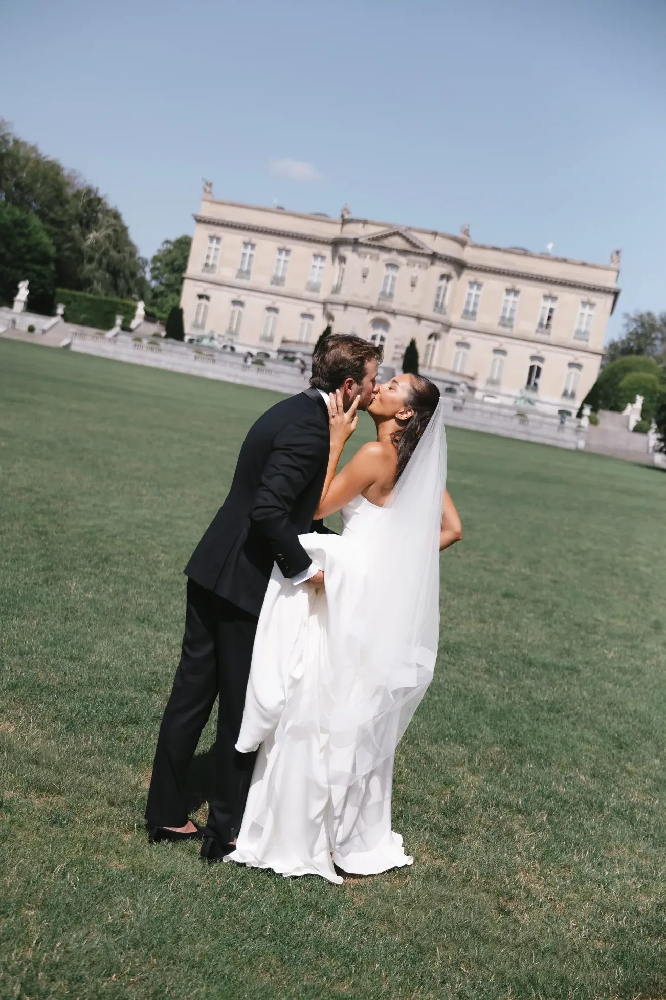
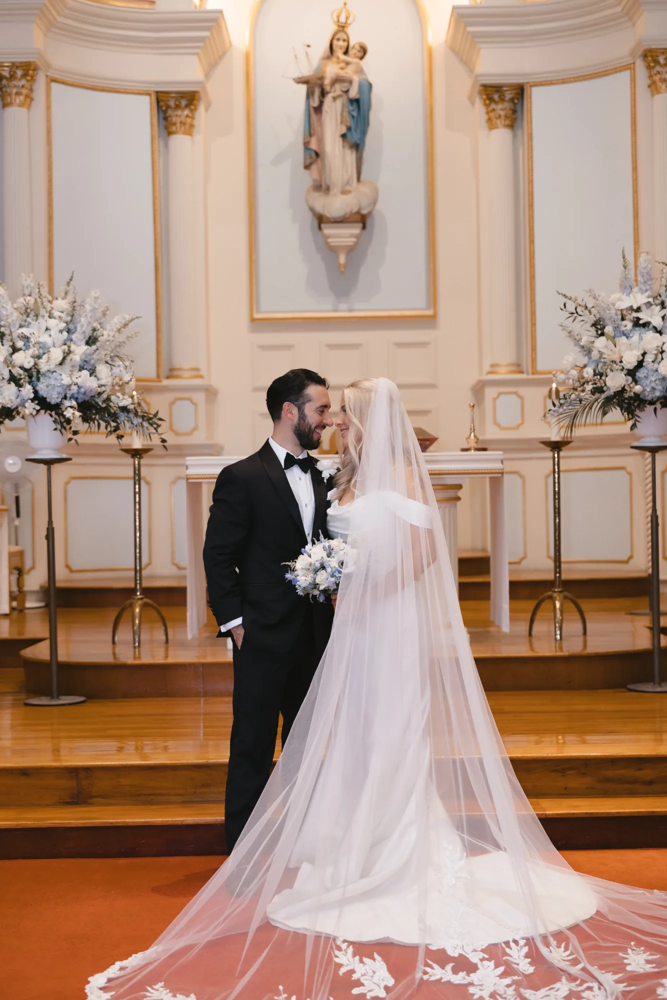
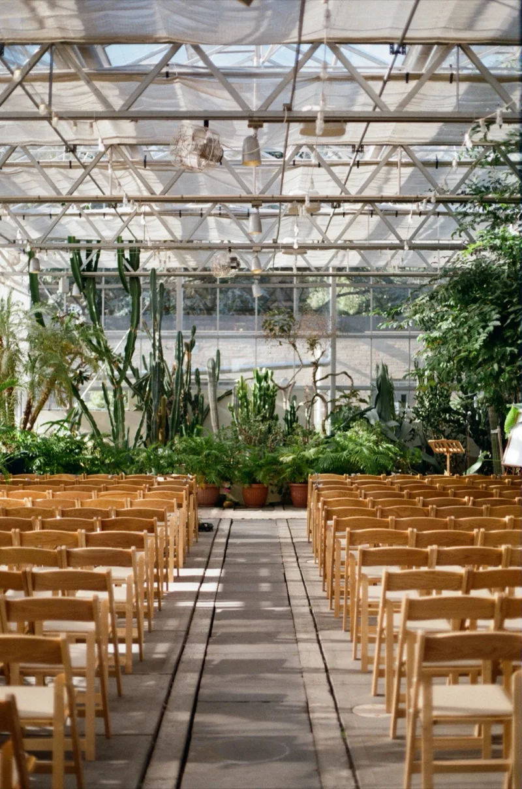
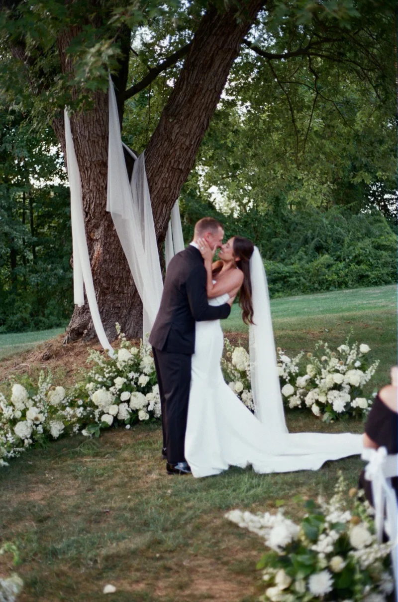

The Collection
Real weddings

Halle & Zach
OceanCliff · Newport, RI
A first look at The Elms, vows on the Bridge Lawn above Narragansett Bay, and a ribbon-wand sendoff into the Newport night.
View the Gallery →
Chris & Abby
Cruiseport · Gloucester, MA
A ceremony at Our Lady of Good Voyage, a cocktail hour cruise on Gloucester Harbor, and a Cruiseport dance floor into the night.
View the Gallery →
Jess & Brett
OceanCliff · Newport, RI
A Fourth-of-July-weekend wedding at OceanCliff — a waterfront arbor ceremony over Narragansett Bay and dancing into the night.
View the Gallery →
Caite & Sean
OceanCliff · Newport, RI
A summer celebration at OceanCliff — an Our Lady of Mercy Chapel ceremony and golden hour over Narragansett Bay.
View the Gallery →
Gabi & Ike
Roger Williams Botanical Center · Providence, RI
Glass walls, towering green, and an unhurried afternoon inside the botanical center.
View the Gallery →
Meghan & Pat
Floriana · Ipswich, MA
Hydrangeas, a centuries-old tree, and a night that carried on at Floriana.
View the Gallery →
Ashley & John
The Chanler at Cliff Walk · Newport, RI
Ocean views, golden light, and an afternoon steeped in elegance at The Chanler.
View the Gallery →